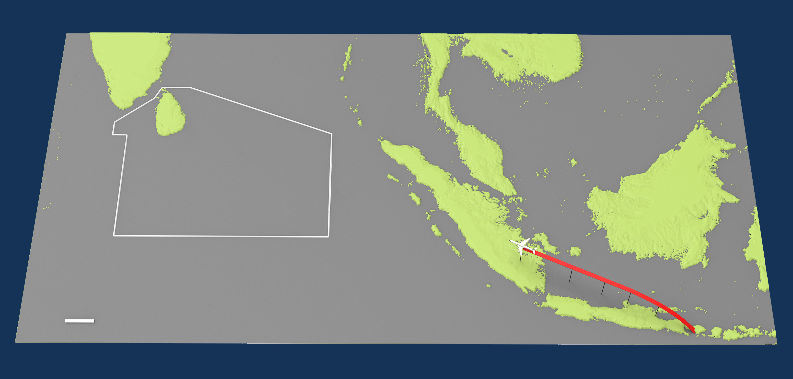
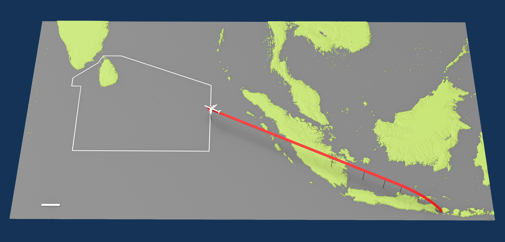
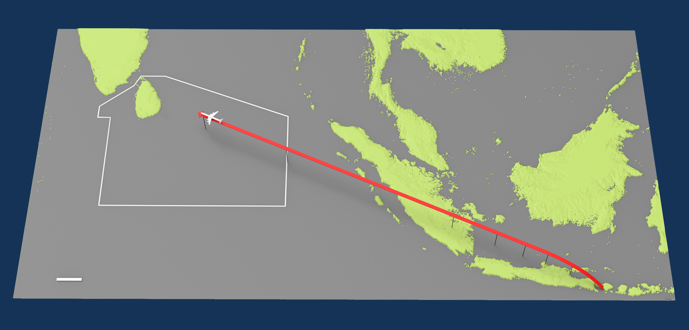
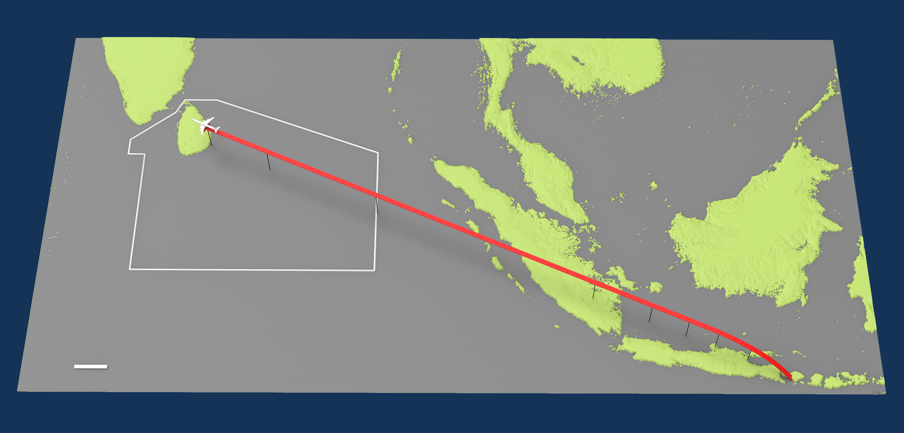
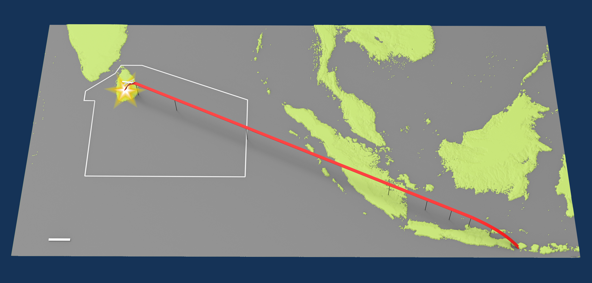
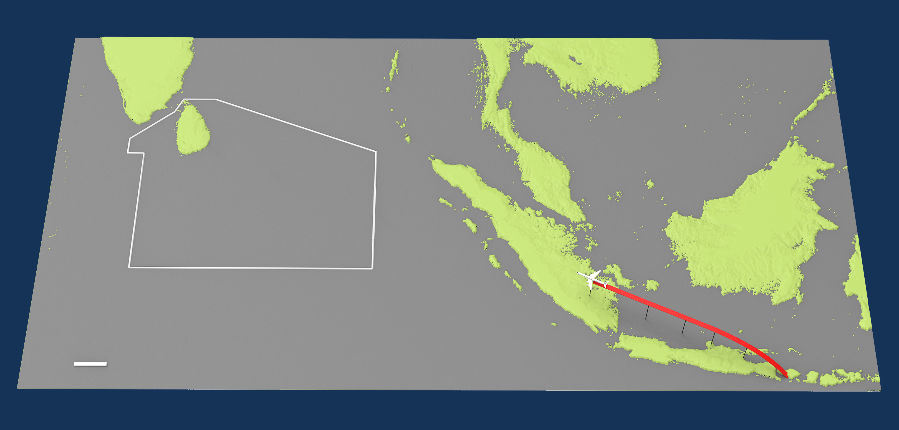
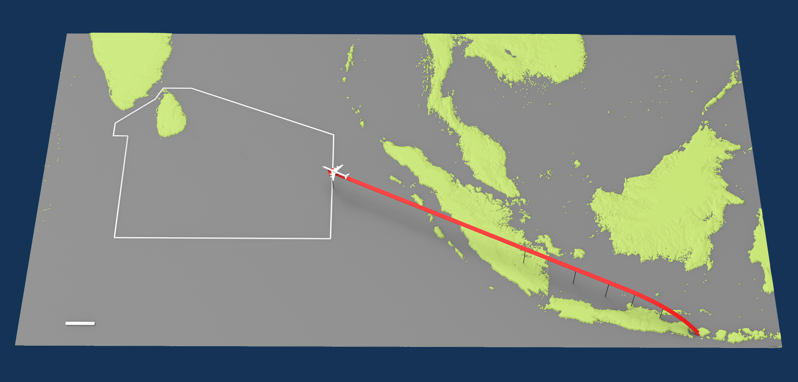
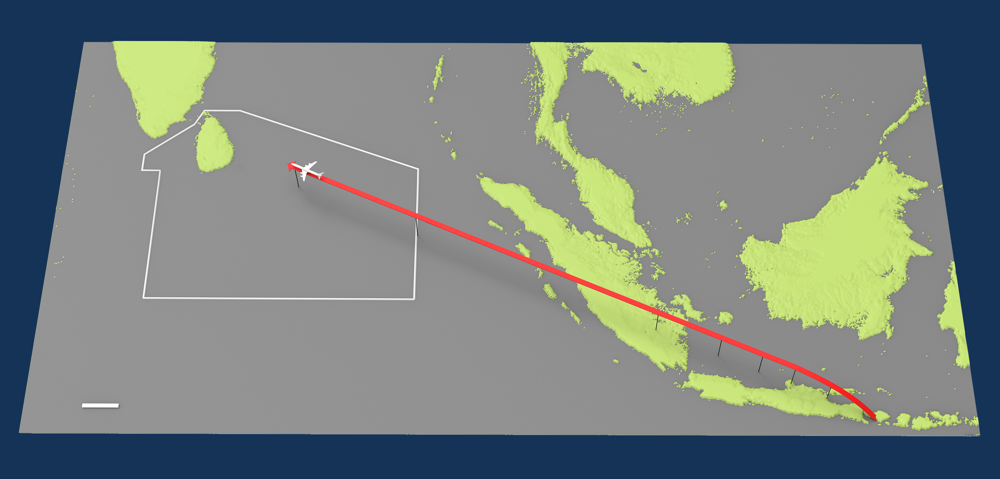
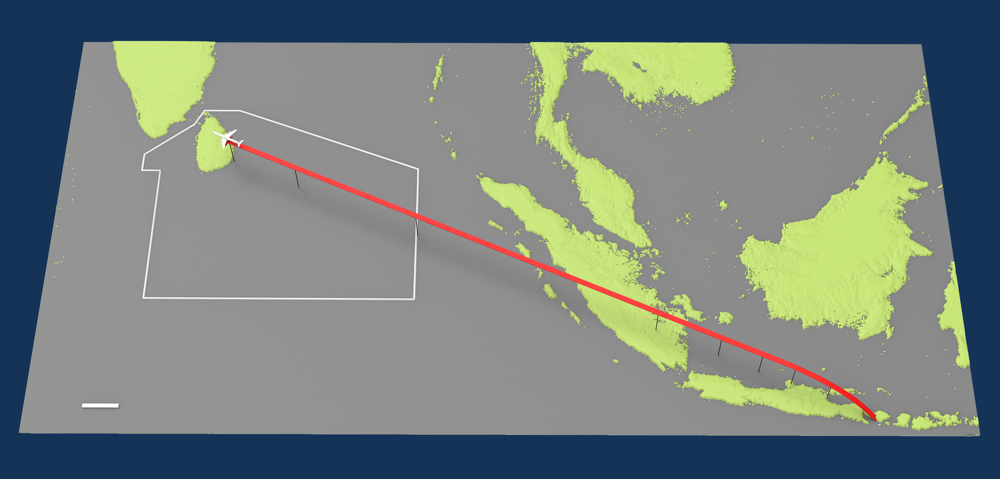
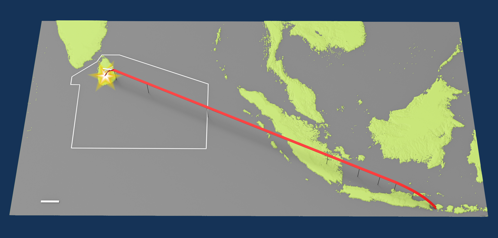

Let's see which parts of the world are answering the call to make the pursuit of happiness the national mission.
In darker blue countries, happiness is increasing quickly. Darker red countries have rapidly falling happiness.
Africa seems to be home to some of the extremes.
The nations where happiness is increasing most quickly, and unfortunately several nations where happiness is losing the most ground, are located in Africa.
Generally speaking, West Africa and Southern Africa show a stark contrast in the direction national happiness is moving.
Rwanda, Tanzania, Malawi, Zambia, Zimbabwe, and Botswana show some of the most unfavorable trends in happiness among the world's nations.
These Southern African countries show between -1.8% and -2.9% change in happiness per year.
However, some West African countries are leading the world in improving happiness. Among this large block of 11 neighboring nations, all show a rapid rise in happiness.
Within this group of nations, Senegal, Burkina Faso, Congo (Brazzaville), Cameroon, Togo, and Benin show gains in happiness of more than 2% per year.
In particular, the nations Togo and Benin show the fastest increase in national happiness in the entire world, averaging 4.2% and 4.0% per year respectively.
According to the World Happiness Report, Benin was ranked second-to-last, or 155th, in the world in 2012. In 2020, Benin ranked ahead of China by 7 spots, at 86th.
In particular, the nations Togo and Benin show the fastest increase in national happiness in the entire world, averaging 4.2% and 4.0% per year respectively.
hPPPPPPPPPPP
In particular, the nations Togo and Benin show the fastest increase in national happiness in the entire world, averaging 4.2% and 4.0% per year respectively.
xxxxxxxxxxx